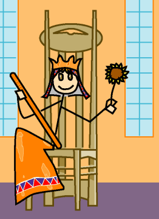

→
Damian Cugley →
Alleged Tarot 2002 →
png →
→
Damian Cugley →
Alleged Tarot 2002 →
png →
| « The Knight of Wands | The King of Wands » | |
|  | ||
|
The Queen of Cups The Queen of Swords The Queen of Coins |
||
Upright: a practical organizer; lively, active, creative
Reversed: a possessive woman; bad-tempered, dictatorial
The chair is based on Charles Rennie Mackintosh’s chair design for the Argyle Street Tea Rooms, 1897. I chose it because its tall and narrow shape and oak construction suggests the suit of Wands to me. The shape of the headrest makes it slightly more ‘feminine’ in shape than the one I gave to the King. I have exaggerated its size to make it ore like a throne than a normal chair.
See also Thirteen’s description on the Aeclectic Tarot site
If your browser supports SVG, then you should visit the SVG version of this page. It is so much more cool!